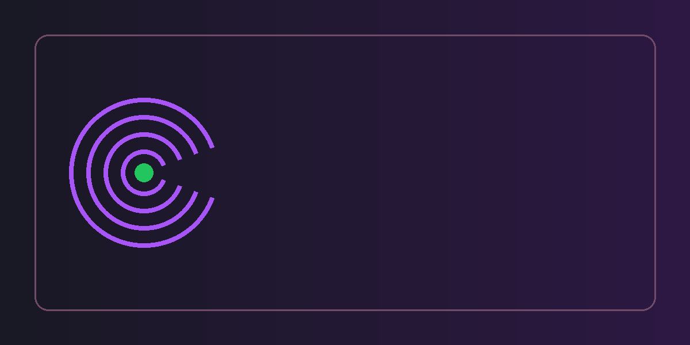

Visit Our Website: https://ridhira.desigoogly.com/
Need Help? Contact Us for Free Support & Setup Assistance
Scan for WhatsApp
Scan for Telegram
Free 30-Day Trial & Free Remote Deployment Assistance. Contact us on WhatsApp or Telegram for instant onboarding support!

Traditional modules like hr_zk_attendance rely solely on local TCP polling, which freezes Odoo workers when devices are offline and completely fails when devices are in remote branches behind NAT/firewalls. Ridhira solves this with a modern, dual-protocol, enterprise architecture:
Biometric terminals in branch offices, warehouses, or client sites instantly push attendance punches over HTTP/HTTPS directly into Odoo as employees scan their fingers or faces.
Robust high-speed direct polling over port 4370 with configurable timeouts, password authentication (comm_key), and automated background cron tasks.
Upload new employees with name, badge ID, and privileges straight from Odoo to multiple physical machines. Download device users and auto-match to Odoo HR records.
Monitor terminal online/offline health, last activity timestamp, punch counts, and device firmware from a sleek, responsive Kanban control center.
Never lose punch data. Every scan is logged with device serial, raw payload, verification type, and link to the final hr.attendance record.
Protects against duplicate scans within configurable minutes and prevents runaway open shifts if an employee forgets to check out at the end of the day.
Cloud ADMS Push Server (ICLK).your-odoo-domain.com).80, 443, or 8069).Direct TCP/IP Polling.192.168.1.201) and Port (4370).
Post JSON punch logs to: http://your-odoo-domain.com/api/biometric/punch
{
"token": "optional_secret_token",
"device_sn": "ZK12345678",
"punches": [
{
"user_id": "101",
"timestamp": "2026-10-25 09:30:00",
"type": "check_in",
"verify": "1"
}
]
}
Our dedicated biometric engineering team is ready to assist you with installation, network configuration, and device mapping.